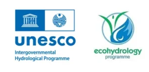

Real-time Monitoring
View current measurements from connected deployments and keep track of changing conditions as they happen.
UTHM IoT is an initiative to integrate Internet of Things technology into monitoring, research and educational activities across Universiti Tun Hussein Onn Malaysia.
The UTHM IoT platform brings together deployed IoT nodes and presents their data through a unified web experience. It is designed to make live measurements easier to access, understand and use for monitoring, research and learning.
View current measurements from connected deployments and keep track of changing conditions as they happen.
Provide a common entry point for different IoT deployments across the university campus and future locations.
Turn sensor readings into clear graphs, status information and historical views that are easier to interpret.
IoT deployments can generate continuous streams of measurements. UTHM IoT provides the digital layer that connects those measurements to a practical monitoring interface.
The platform supports a growing ecosystem in which deployed nodes can contribute data for operational awareness, research activities, student learning and future smart-campus initiatives.
IoT devices collect measurements from their deployment environment.
Data is transmitted from deployed nodes to the monitoring platform.
Measurements are presented through dashboards, graphs and status views.
Data can support research, education, monitoring and future campus solutions.

Universiti Tun Hussein Onn Malaysia (UTHM) has been acknowledged under the UNESCO-IHP Ecohydrology Programme to become part of the Global Network of Ecohydrology Demonstration Sites of UNESCO’s Intergovernmental Hydrological Programme (UNESCO-IHP).
This recognition connects UTHM with an international network focused on ecohydrology and sustainable approaches to water and environmental systems, providing an important context for the university’s environmental monitoring, research and educational activities.
As more IoT deployments are introduced, this platform can serve as a central gateway to new monitoring locations and new datasets across the university. The goal is a connected ecosystem that supports research, innovation, environmental awareness and education.